How to shop, pay and track orders on NAVIR, and how the shop team runs orders, products and users, with screenshots of every step.
Version
1.0
Date
14 November 2026
Shop
navir.site.je
For
Shoppers, admins and system admins
Screenshots show test data. Related documents: BRD, PRD, SRS & Technical Design, Design System.
1. Getting started
NAVIR is an online shop for men's skincare. You can browse products, take a short quiz that builds your daily routine, order, pay by bank transfer and follow your order. The shop team uses the same site to manage orders, products and users.
The shop: navir.site.je (works on phones and computers).
Everything a shopper can + dashboard, orders, products, categories
Given by a System Admin
System Admin
Everything an admin can + user management
The shop owner
Try it with the demo accounts. On the Log in page, the "Try the demo" box has two ready-made accounts; click one to fill the form, then press Log in. Both use the password shown in the box.
Demo account
What it shows
Limit
Shopper (demo.user@navir.test)
Shopping, ordering, tracking, reviews
Can't change its own name, email or password
Admin (demo.admin@navir.test)
The whole admin area
Can look at everything and move an order's status, but can't save other changes
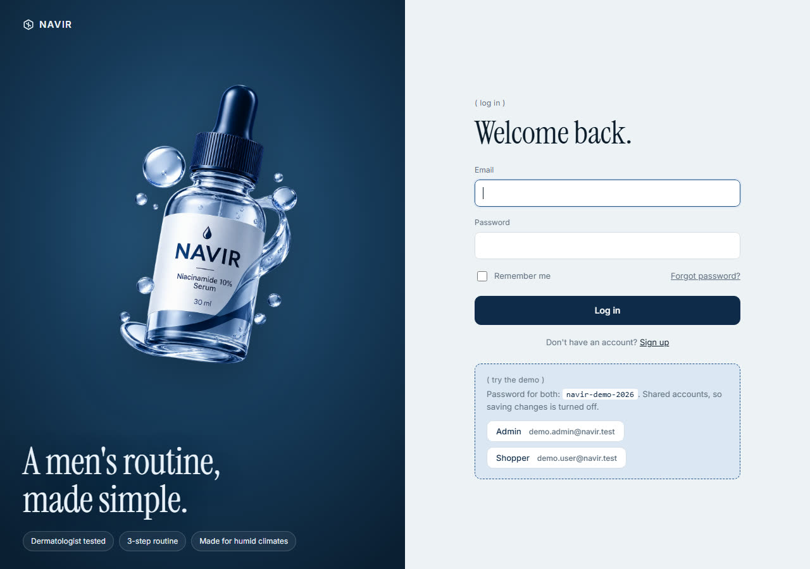
The Log in page with the "Try the demo" box
2. For shoppers
2.1 Browse and search
Open Shop in the top menu. Products show their photo, category, name, price and, when people have reviewed them, stars.
Use the sort tabs (Newest, Price: low to high, Price: high to low, Top rated) and the category links to narrow the list.
Type a word in Search products (for example "serum") and press Enter. It looks in names, descriptions and categories, and works together with the sort and category you chose.
Click a product to open its page: photos, size, stock, description, reviews and related products. ← All products takes you back to the full list.
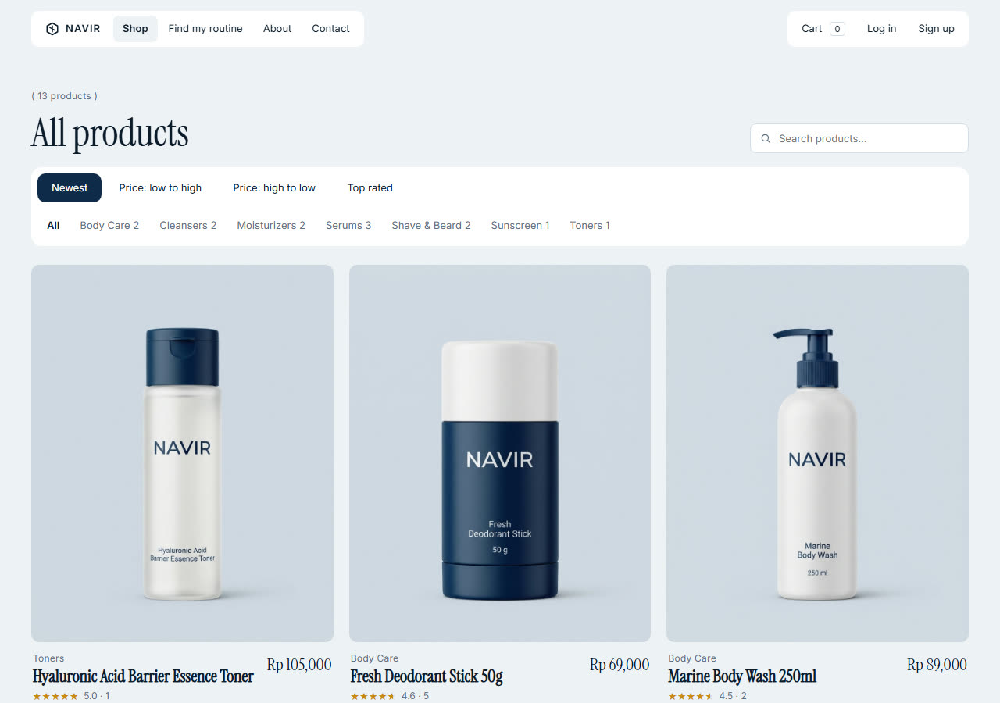
The shop: search, sorting, categories and ratings
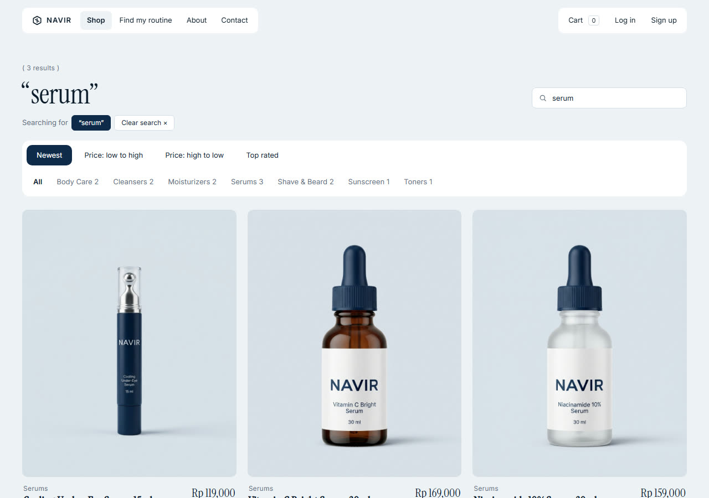
Search results for "serum"
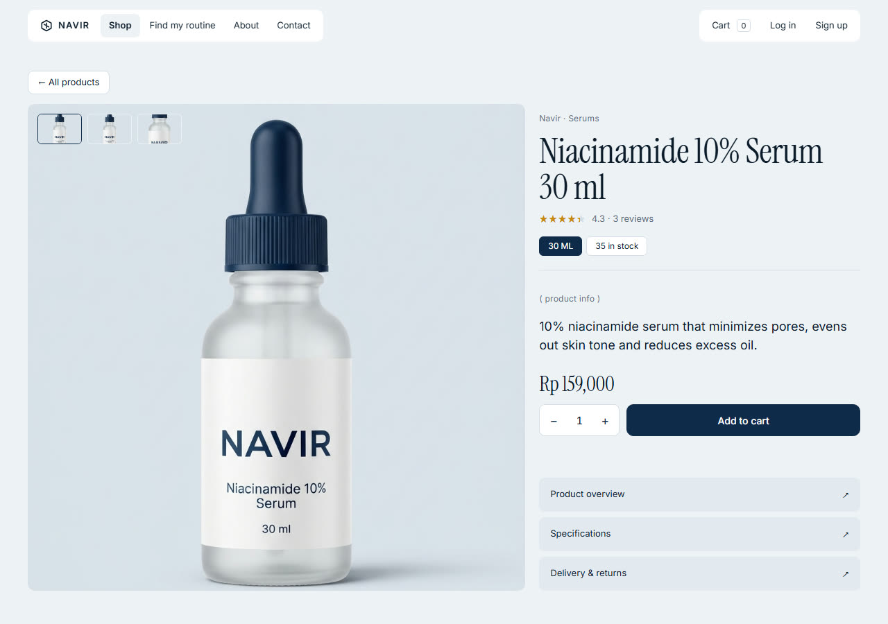
A product page with quantity picker and Add to cart
2.2 Find my routine (skin quiz)
Not sure what to buy? The quiz recommends a 3-step routine (Cleanse, Treat, Protect) from NAVIR products. No photos and no sign-up.
Open Find my routine in the menu (or the card on the home page).
Answer the 4 questions: how your skin feels after washing, what you want to fix, how long you're outside, and whether you shave or have a beard.
Press Show my routine.
Read each step: the product, why it was chosen and its price. Press Add to cart on one product, or Add the whole routine to cart for all of them.
Under Good extras for you you may see shaving foam, beard oil or a toner. The link in your browser's address bar can be shared; it opens the same result.
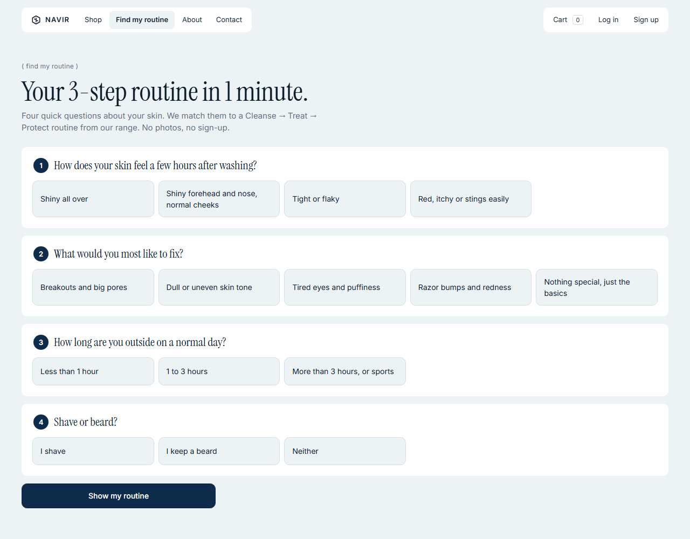
The quiz questions
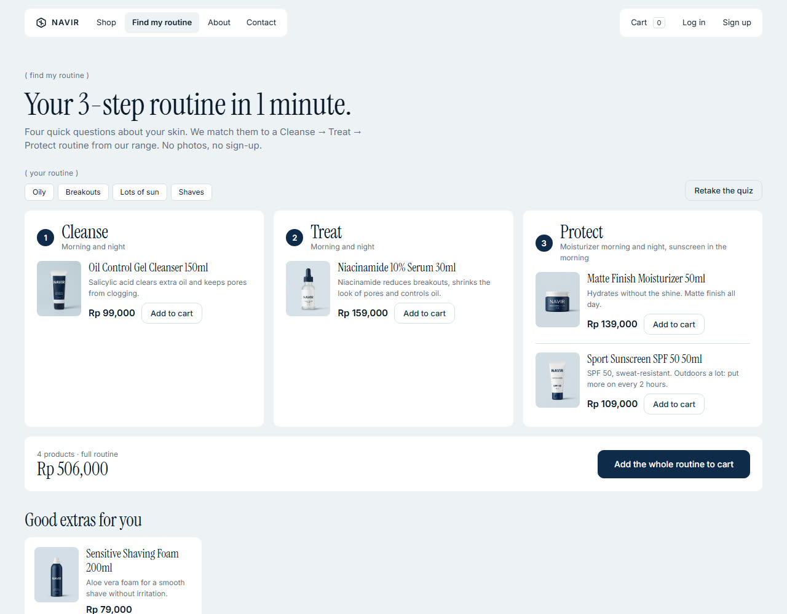
A routine result with "Add the whole routine to cart"
The quiz is a general guide, not medical advice. If you have a skin condition, ask a dermatologist first.
2.3 Add to cart and check your cart
On a product page choose the quantity with − and +, then press Add to cart. A small popup confirms it and the Cart number in the menu goes up.
Open Cart. Change quantities with − and +, or remove a product with ×. The + is greyed out when you reach the stock limit.
The summary shows subtotal, shipping and total. Shipping is Rp 15,000, or free from Rp 200,000; a bar tells you how much more you need.
You don't need an account to fill the cart. Press Continue to checkout when you're ready.
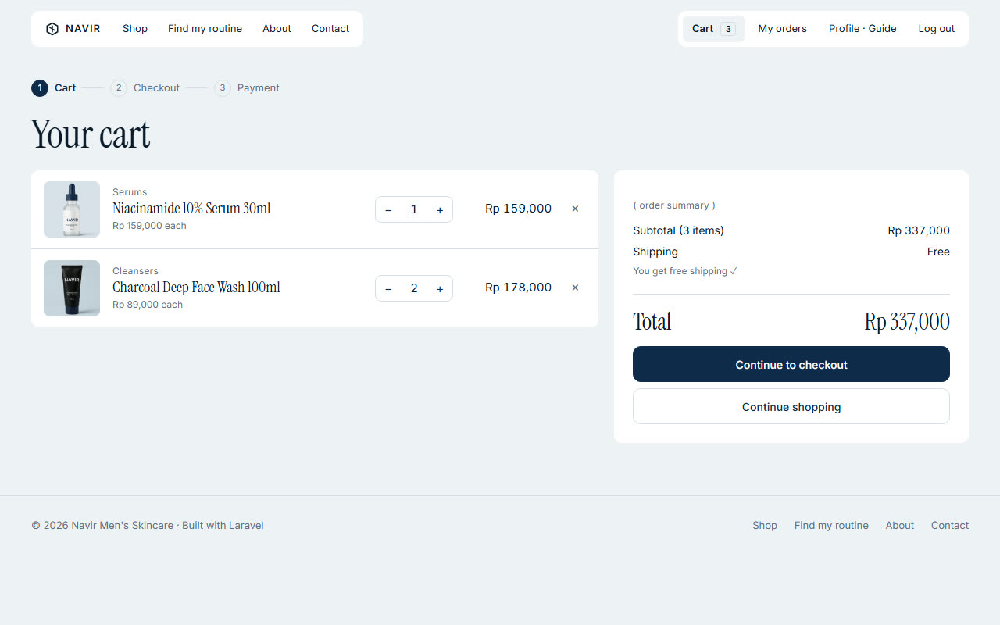
The cart with the order summary
2.4 Checkout
If you're not logged in, you'll be asked to log in or sign up. After that you come straight back to checkout and your cart is still there.
Fill in recipient name, phone / WhatsApp, email and full address. Name and email are pre-filled from your account; the note is optional.
Check your order on the right, then press Place order.
If a product ran out of stock in the meantime, nothing is saved and a message tells you which one. Go back to the cart and adjust.
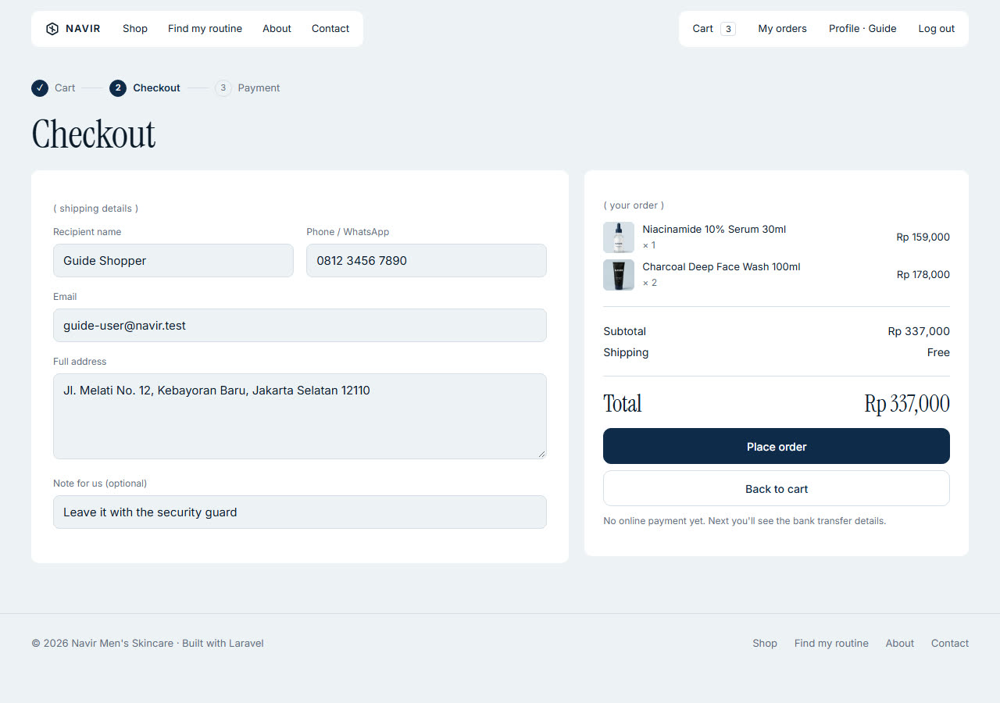
Checkout: shipping details and order summary
2.5 Pay by bank transfer and confirm
After Place order you land on the payment page and your order number (like NVR-7KQ2M9XA) is created.
Transfer the exact amount to the bank account shown. Copy account number copies the digits for your banking app.
In Confirmation form, the Message box is already filled with your order number, items, total and address. Add anything you like, for example the time of transfer.
Press Send confirmation. You'll see a thank-you page with Track this order.
The shop checks the transfer in its bank account and updates your order. Please transfer within 24 hours.
If you close the page before sending the confirmation, open My orders, open the order and press Send payment details.
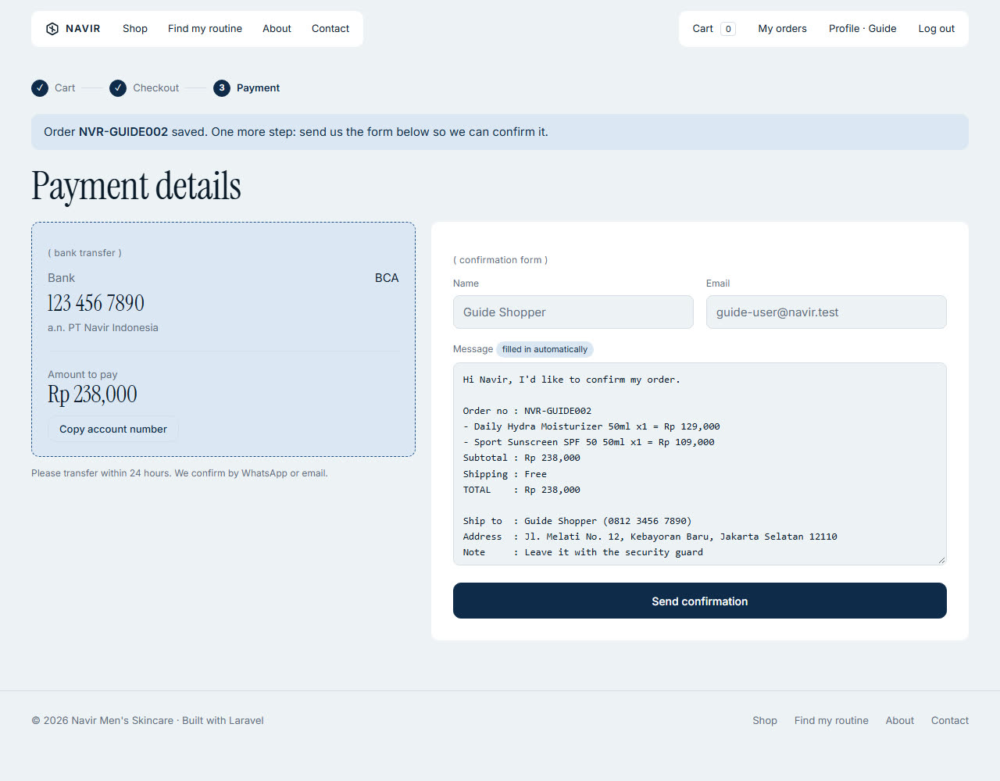
The payment page with the pre-filled message
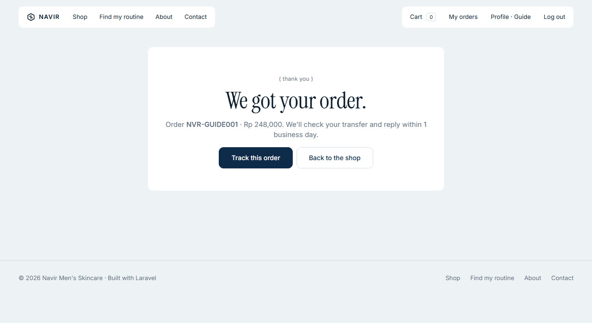
Thank-you page
2.6 Track your orders
Open My orders in the top menu. Orders are listed newest first, with photos, date, number of items, status and total.
Click an order to see where it is. The tracker moves through Order placed → Processing → Shipped → Delivered. A returned order shows a notice instead.
The page also shows your items, totals, shipping address and whether your payment confirmation was sent.
You can only see your own orders.
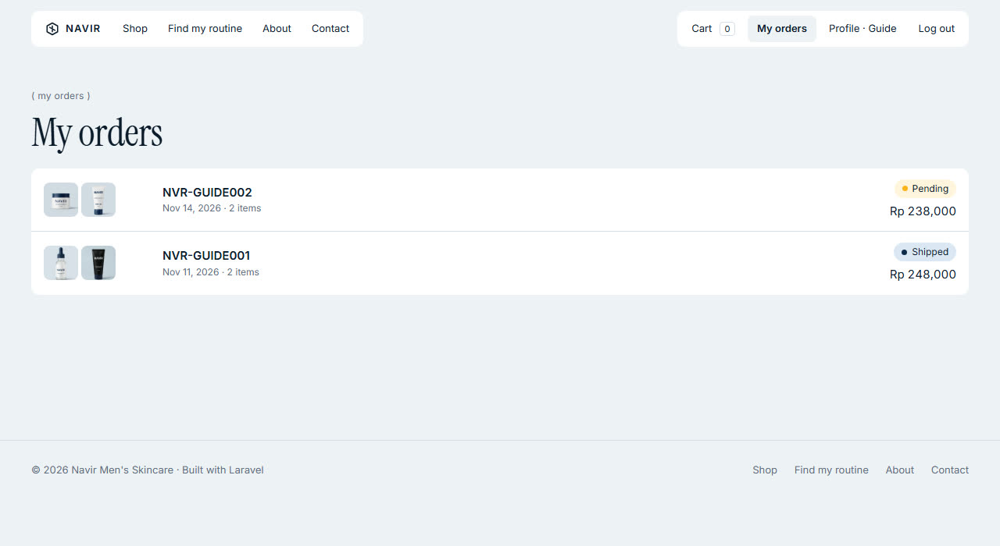
My orders
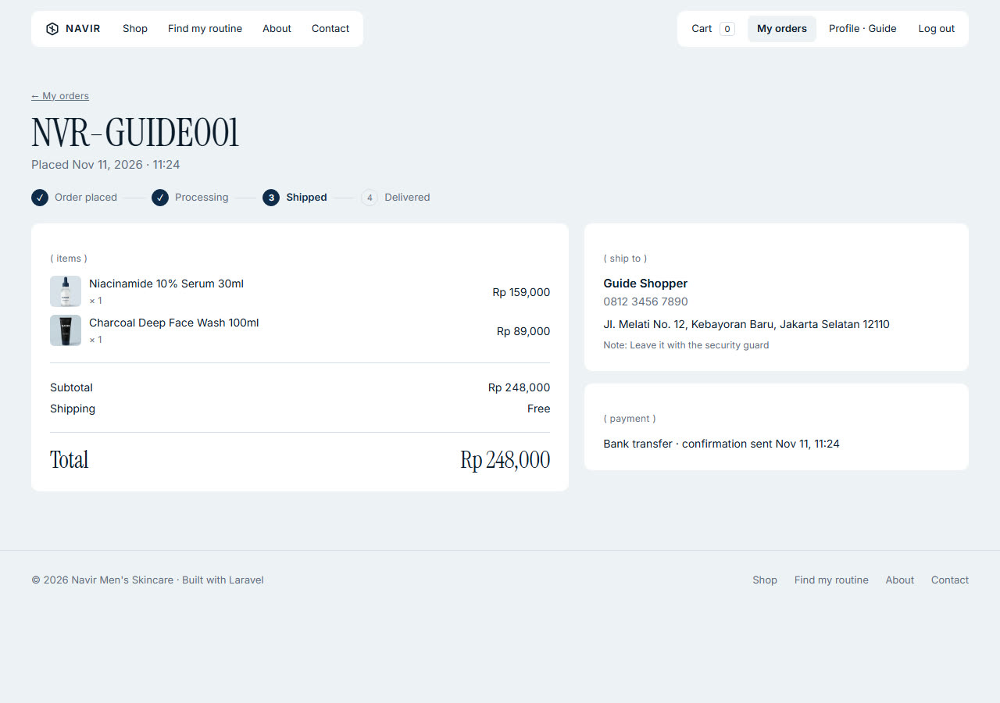
An order with its status tracker
Status
Meaning
Pending
We have your order and are waiting to confirm your payment
Processing
Payment confirmed; the order is being packed
Shipped
On its way to you
Delivered
It arrived
Returned
The order was returned
2.7 Write a review
Open the page of a product you have ordered, then scroll to Reviews.
Click the stars (1 to 5), add an optional comment and press Post review.
Your review shows your first name and last initial, with a Verified buyer tag. To change it, post again: it updates your earlier review. You can remove your own review with Remove.
If you haven't bought the product, the box says only customers who ordered it can review it. This keeps reviews honest.
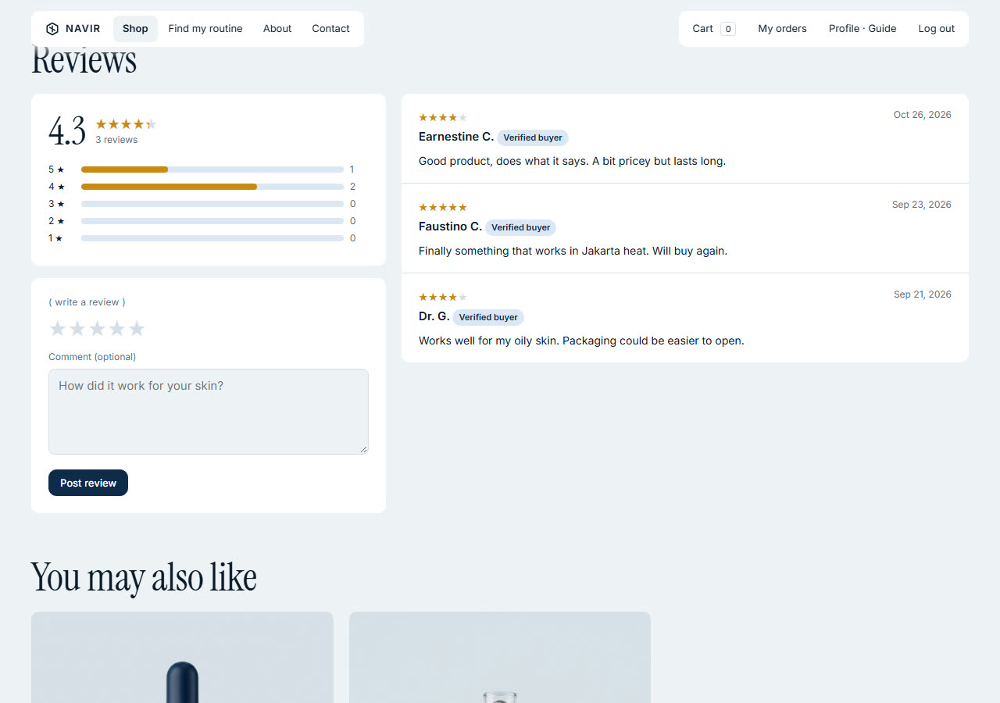
Reviews and the review form
2.8 On your phone
NAVIR works the same on a phone. The top bar is logo, Cart and a ☰ button. Tap ☰ to open Shop, Find my routine, About, Contact and your account links (Log in / Sign up, or My orders, Profile and Log out). Filters on the Shop page scroll sideways with your finger.
Home page
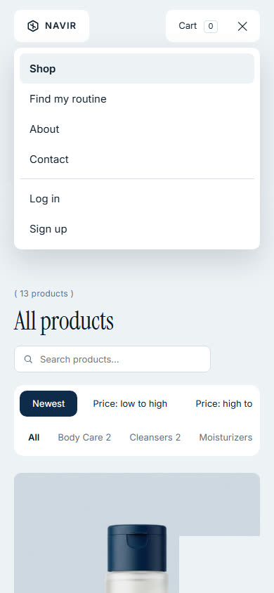
Phone menu
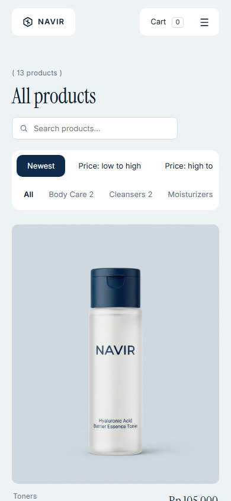
Shop
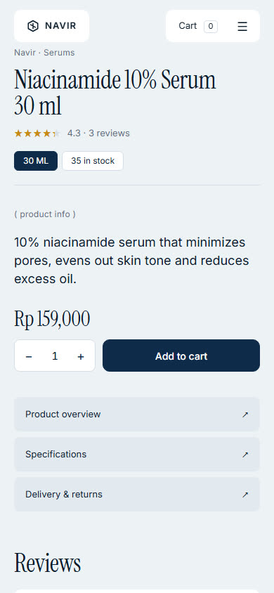
Product page
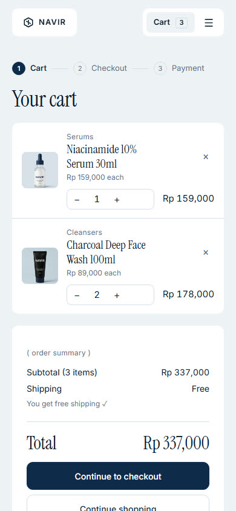
Cart
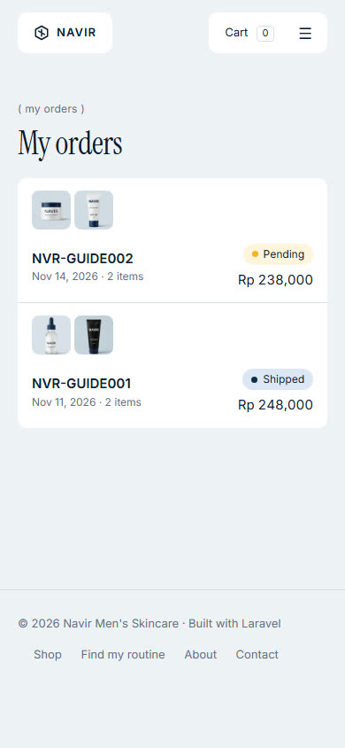
My orders
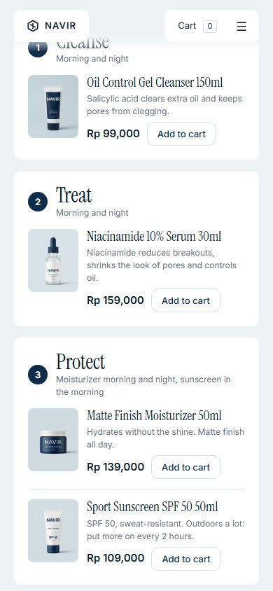
Routine result
3. For admins
Log in with an Admin or System Admin account. After log in you land on the Dashboard. The left menu shows Dashboard, Orders, Products, Product Categories (and User Management for System Admins), plus Profile. Shortcuts at the bottom: Add product, Low stock and View shop.
3.1 Dashboard
The dashboard answers "how is the shop doing?" for the last 7, 30 or 90 days (switch at the top right).
Summary cards: products, categories, product clicks, orders and revenue, each compared with the period before. Revenue does not count returned orders.
Conversion gauge: orders divided by product-page visits, against a 5% goal.
Charts and lists: clicks or revenue over time, clicks by category, most-clicked products, order fulfilment by status, average order value, recent orders and a low-stock count (products with fewer than 10).
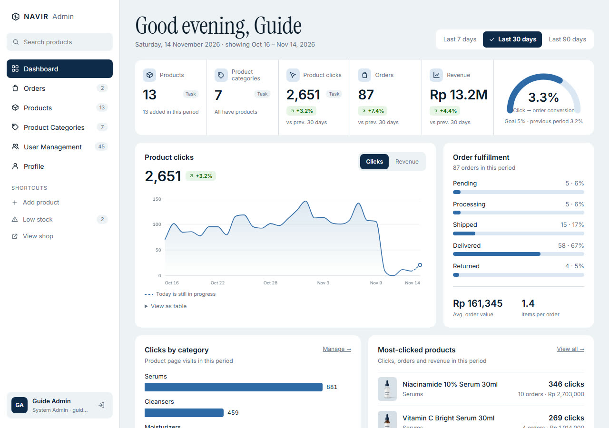
The admin dashboard
3.2 Handle orders
Open Orders. The number next to it counts orders still Pending.
Use the tabs (All, Pending, Processing, Shipped, Delivered, Returned) or the search box (order number, name or email) to find an order.
The Payment column says Waiting until the customer sends the confirmation, then Confirmation sent.
Click an order number. You see the items, totals, the customer's payment message, the shipping address, phone, email and note.
Check your bank account for the transfer. Then choose the new status in Status and press Update. The order moves Pending → Processing → Shipped → Delivered, and the customer sees it under My orders.
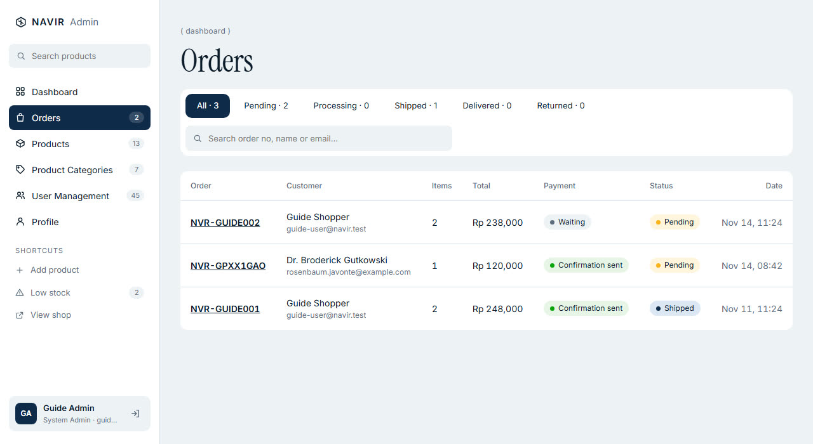
The orders list with status tabs and search
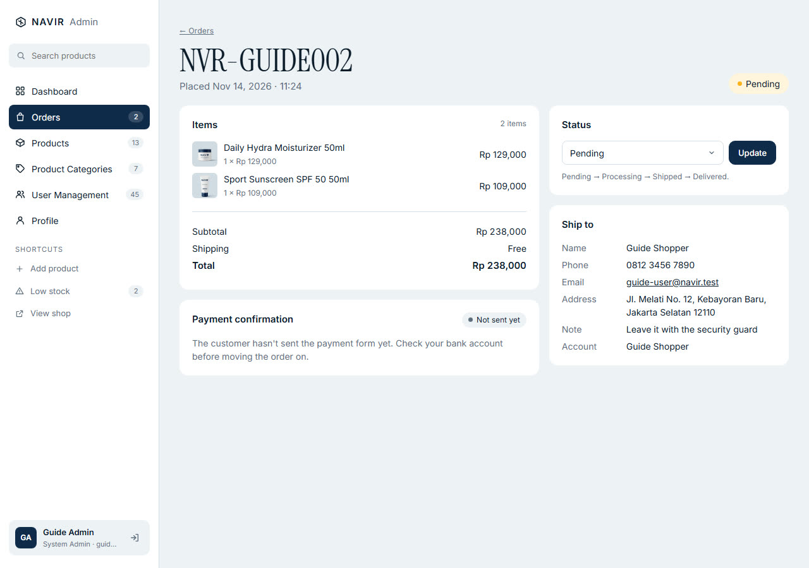
One order: items, payment message, address and status
3.3 Manage products
Open Products for the table (10 per page). Use Search products in the left menu, or Low stock to see products under 10.
+ Add product opens the form: category (optional), name, description, price and stock (whole numbers), and a photo (JPG, PNG or WebP, up to 2 MB).
Edit changes any of this. You can replace the photo, or tick Remove image to show the "No photo yet" placeholder.
Delete asks you to confirm with Yes, delete; the photo file is deleted too. Customers' past orders for that product are removed with it, so prefer setting stock to 0 for products you only stop selling.
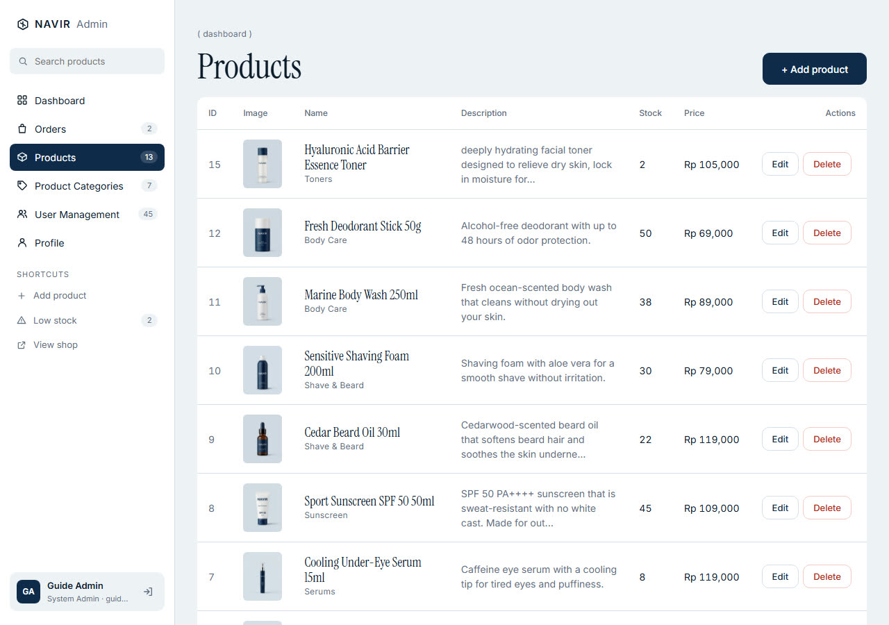
The product list
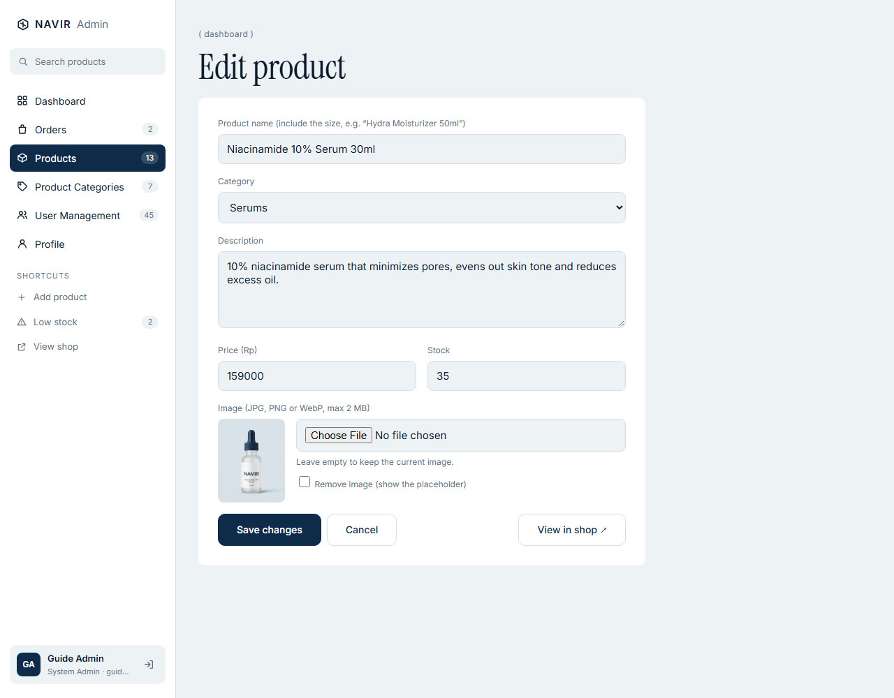
Editing a product
3.4 Manage categories
Open Product Categories. Each category shows how many products it has. Add, rename or delete categories; names must be unique and at most 100 characters. Deleting a category keeps its products: they become "Uncategorized".
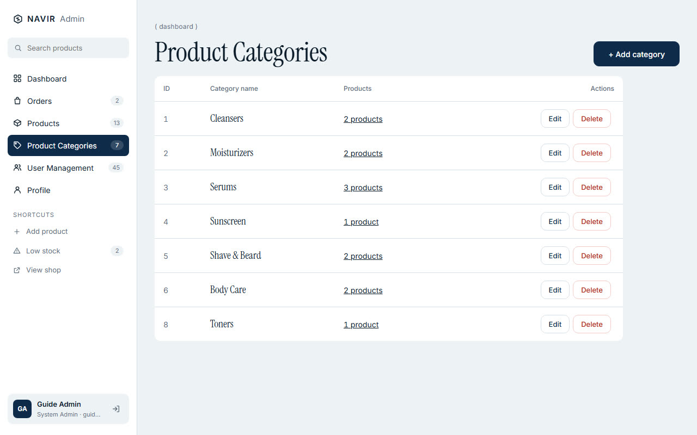
Categories
3.5 On a phone
On a phone the admin menu folds behind the ☰ button at the top. Tap it to open the menu, tap again to close it.
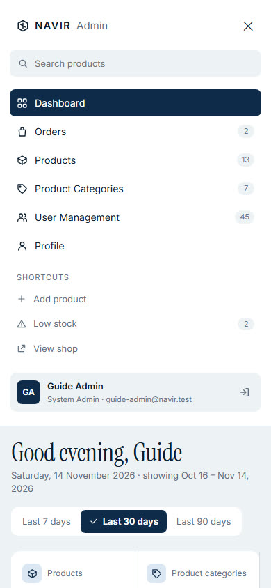
Admin menu on a phone
4. For system admins: user management
Only System Admins see User Management.
Open User Management. Each row shows the person's name, email, role and a trash icon. Search by name or email, filter by role, and click Name to sort A–Z or Z–A.
Change a role: pick User, Admin or System Admin in the dropdown. It saves immediately and a green message confirms it.
Delete a user: click the trash icon, then Yes, delete. This also deletes that person's orders and reviews.
Your own row is marked you: you can't change your own role or delete yourself, so the shop never ends up without a System Admin.
Role
What it unlocks
User
Shop, quiz, cart, checkout, My orders, profile, reviews
Admin
+ Dashboard, Orders, Products, Product Categories
System Admin
+ User Management
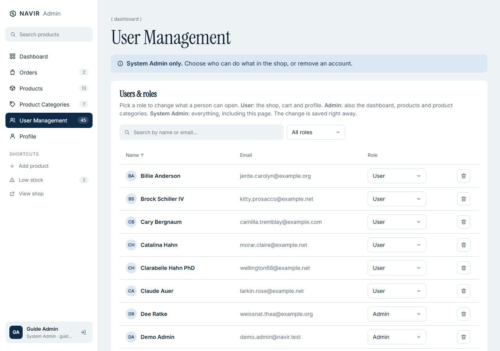
User management
5. FAQ and troubleshooting
Question
Answer
I can't write a review.
Reviews are for customers who ordered the product (and the order wasn't returned). Log in with the account that placed the order.
"Only admins can open this page" (403).
Your role doesn't include that page. Ask a System Admin to change your role.
I lost my password.
On the Log in page choose Forgot password? and follow the link sent to your email.
Why do I have to log in at checkout?
The order is saved under your account so you can track it later. Your cart is kept.
I paid but my order still says Pending.
Pending means the shop hasn't confirmed the transfer yet. Make sure you pressed Send confirmation (open the order and use Send payment details if not).
The "Add to cart" button says Out of stock.
That product has no stock left for now.
My cart number disappeared.
The cart is kept for a limited time per browser. Add the products again.
The demo account says it can't save changes.
Demo accounts are shared and read-only. Sign up for your own account to change a profile.
A quiz recommendation has a different product than before.
Recommendations use the products available now; if one was renamed or removed, a similar one from the same category is used.
6. Quick reference
Task
Where
Search for a product
Shop → Search products
Get a routine
Find my routine
See your cart
Cart (top bar)
Check out
Cart → Continue to checkout
Send payment confirmation
After Place order, or My orders → order → Send payment details
Follow an order
My orders
Review a product
Product page → Reviews (after you bought it)
Handle an order (admin)
Admin → Orders → order → Status → Update
Add or edit a product (admin)
Admin → Products
Change someone's role (System Admin)
Admin → User Management
Rules to remember: shipping is Rp 15,000, free from Rp 200,000 · stock is checked when you place the order · one review per product per customer · demo accounts can't save changes (except placing orders, reviews and moving an order's status).